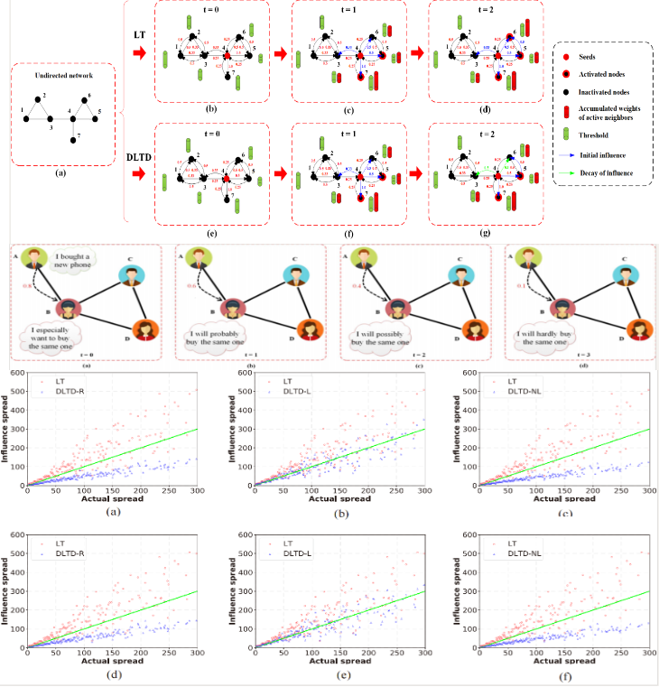
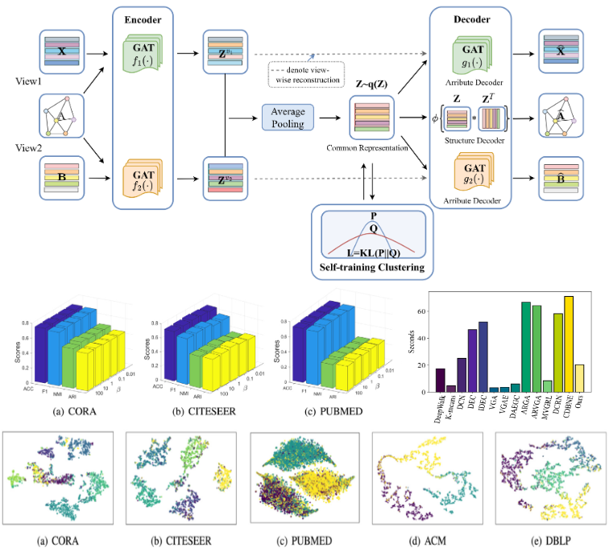
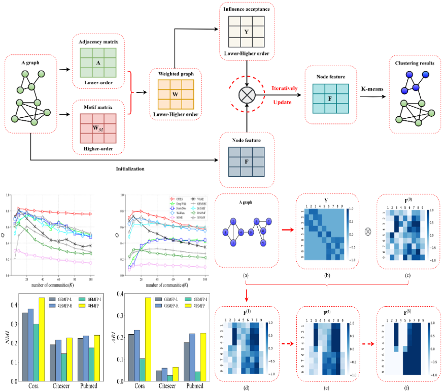
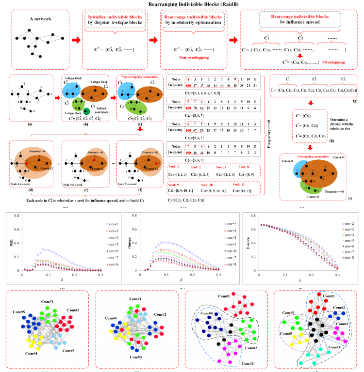
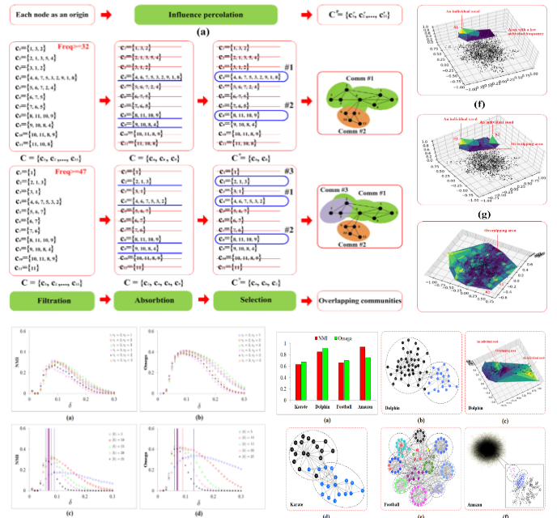
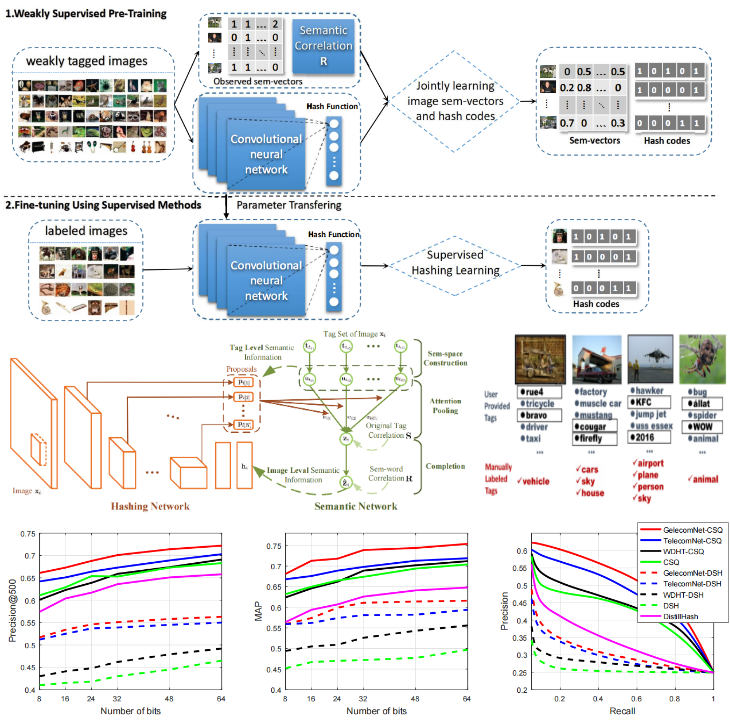
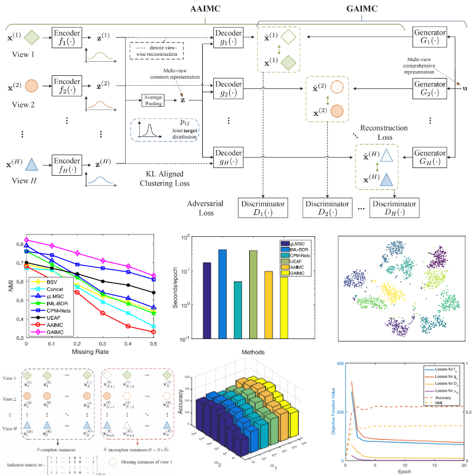

|
Xunlian Wu
Xunlian Wu (仵训练) is a PhD candidate 🎓 in the School of Computer Science and Technology at Xidian University (XDU). During his master's studies, he was supervised by Prof. Ziyu Guan in the State Key Laboratory of Integrated Services Networks. In his PhD program, he is supervised by Prof. Peng Gang Sun at the Xi'an Key Laboratory of Big Data and Visual Intelligence. His research interests include graph neural networks, graph clustering, and community detection.
Email /
Google Scholar /
Twitter /
Github /
Researchgate
|

|
📰News
- [2024.03] ✌️ I received Research and Innovation Funds of Xidian University funding.
- [2023.12] ✌️ I won Outstanding Graduate Student.
- [2023.11] ✌️ I received Outstanding Doctoral Dissertation Funding.
- [2023.10] ✌️ I won Tencent Social Scholarship.
- [2023.10] ✌️ One paper has been accepted by ESWA.
- [2023.09] ✌️ One paper has been accepted by Physica A.
- [2022.12] ✌️ I won Outstanding Graduate Student.
- [2022.10] ✌️ I won Tencent Social Scholarship.
- [2022.09] ✌️ I won first-class scholarship for doctoral students.
- [2022.05] ✌️ One paper has been accepted by IEEE T-KDE.
- [2022.02] ✌️ One paper has been accepted by Physica A.
- [2021.09] ✌️ One paper has been accepted by IEEE T-PAMI.
- [2021.03] ✌️ One paper has been accepted by IEEE T-CYB.
More
|
|
👨🏻💻Research
My research interests mainly include social network analysis, self-supervised learning and graph neural networks. I'm also interested in their applications such as community detection, influence maximization, deep graph clustering,recommendation and bioinformatics. * denotes corresponding author. The selected papers are listed as follows:
|
|

|
Dynamic linear threshold model with decay for influence spread
Xunlian Wu,
Anqi Zhang,
Yining Quan,
Qiguang Miao,
Peng Gang Sun*
TechRxiv, 2024
Paper
/
Code
The complexity of influence spread poses significant challenges to its accurate modeling. Traditional approaches, such as the Linear Threshold (LT) model, offer a simplified depiction of this phenomenon but overlook the temporal decay of influence. To address this limitation, we introduce a Dynamic Linear Threshold Model with Decay (DLTD), incorporating three distinct decay strategies: random decay, linear decay, and nonlinear decay. Comparative analyses on real-world datasets reveal that DLTD achieves superior accuracy over the LT model.
|
|

|
Deep Dual Graph attention Auto-Encoder for community detection
Xunlian Wu,
Wanying Lu,
Yining Quan,
Qiguang Miao,
Peng Gang Sun*
Expert Systems with Applications, 2024.
Paper
/
Code
We propose an unsupervised method for community detection based on a Deep Dual Graph attention Auto-Encoder (DDGAE). For a graph, the DDGAE considers its attribute information and modularity information as two views, and learns a common representation based on a self-training process during which we can also determine the community assignment.
|
|

|
Graph embedding based on motif-aware feature propagation for community detection
Xunlian Wu,
Han Zhang,
Yining Quan,
Qiguang Miao,
Peng Gang Sun*
Physica A: Statistical Mechanics and its Applications, 2023
Paper
/
Code
Identifying communities plays an essential role in disclosing modular structures with specific functions or properties in different kinds of complex networks. We develops a novel algorithm, Graph Embedding based on Motifaware Feature Propagation (GEMFP) for community detection. We conduct extensive experiments on 14 real-world datasets, and the results show that our algorithm tends to be more effective for community detection.
|
|

|
Rearranging 'indivisible' blocks for community detection
Peng Gang Sun*,
Xunlian Wu,
Yining Quan,
Qiguang Miao,
IEEE Transactions on Knowledge and Data Engineering, 2022
Paper
/
Code
Nowadays, communities strongly overlap due to the fact that people strongly interact, which makes community detection even more challenging. The paper develops a new algorithm by rearranging ‘indivisible’ blocks(RaidB). We compare RaidB with the existing state of the art methods for non-overlapping and overlapping community detection. The results show that RaidB tends to achieve better performance especially on sparse networks with unobvious communities and networks with strongly overlapping communities.
|
|

|
Influence percolation method for overlapping community detection
Peng Gang Sun*,
Xunlian Wu,
Yining Quan,
Qiguang Miao
Physica A: Statistical Mechanics and its Applications, 2022
Paper
Nowadays, boundaries between circles are more and more indistinct because people probably involve more than one circle. We develops an influence percolation method (IPM) for identifying overlapping communities. An interesting finding is that two nodes tend to be indivisible if one is a seed, influence percolates into the other exceeding a certain frequency, and this threshold is mainly determined by the networks’ density.
|
|

|
TelecomNet: Tag-based weakly-supervised modally cooperative hashing network for image retrieval
Wei Zhao,
Cai Xu,
Ziyu Guan*,
Xunlian Wu,
Wanqing Zhao,
Qiguang Miao,
Xiaofei He,
Quan Wang
IEEE Transactions on Pattern Analysis and Machine Intelligence, 2021
Paper
We are concerned with using user-tagged images to learn proper hashing functions for image retrieval. However, tagging data suffers from noises, vagueness and incompleteness. Different from previous unsupervised or supervised hashing learning, we propose a novel weakly-supervised deep hashing framework which consists of two stages: weakly-supervised pre-training and supervised fine-tuning. The framework is general and does not depend on specific deep hashing methods.
|
|

|
Adversarial incomplete multiview subspace clustering networks
Cai Xu,
Hongmin Liu*,
Ziyu Guan,
Xunlian Wu,
Jiale Tan,
Beilei Ling
IEEE Transactions on Cybernetics, 2021
Paper
Most previous works assumed that each view has complete data. However, in real-world datasets, it is often the case that a view may contain some missing data, resulting in the problem of incomplete multiview clustering (IMC). We present the adversarial IMC (AIMC) framework. We explore two variants of AIMC: 1) AAIMC and 2) GAIMC with different strategies for learning multiview common representation. AAIMC tries to capture hidden information of the missing data by MDI via the elementwise reconstruction and the GAN. GAIMC directly searches the multiview comprehensive representation and infers the information of the missing views from the instances of the same cluster.
|
- Research and Innovation Funds of Xidian University: Research on Social Network Analysis and Community Detection Methods. [ NO.YISI24015], Principal Investigator
- Outstanding Doctoral Dissertation Funding Project of Xidian University: Research on Influence Propagation and Community Detection Methods in Complex Networks. Principal Investigator
- National Natural Science Foundation of China: Research on Algorithms for Discovering Dynamic Controllability of Disease Networks and Pathogenic Factor-Related Patterns in the Context of Big Data. [ NO.61872432], Participant
- National Natural Science Foundation of China: Analysis of Online Learning Behavior and Outcome Prediction Based on Knowledge Graphs. [ NO.6207021069], Participant
- National Department Preliminary Research Project: A Certain Intelligent Cognitive Technology. [ NO.41412030502], Participant
- Shaanxi Fundamental Science Research Project in Mathematics and Physics: Research on Renormalization of Big Data in Complex Networks and Hyperbolic Space Representation Learning Algorithms and Their Applications in Community Detection. [ NO.22JSY024], Participant
- Central Universities Basic Scientific Research Fund Project: Research on Learning Resource Recommendation Methods Based on Community Structure and Deep Neural Networks. [ JB210303], Participant
- Reviewer for KDD'24
- Reviewer for ESWA
- Reviewer for Physica A
- Reviewer for Electronic Science and Technology(电子科技)
- Research and Innovation Funds of Xidian University(2024). [PDF]
- Outstanding Doctoral Dissertation Funding(2023). [PDF]
- Outstanding Graduate Student(2023). [PDF]
- Tencent Social Scholarship(2023). [PDF]
- Outstanding Graduate Student(2022). [PDF]
- Tencent Social Scholarship(2022). [PDF]
- Outstanding Pandemic Voluntee. [PDF]
- Scholarship, XDU. [PDF]
Design and source code from Jon Barron's website
|